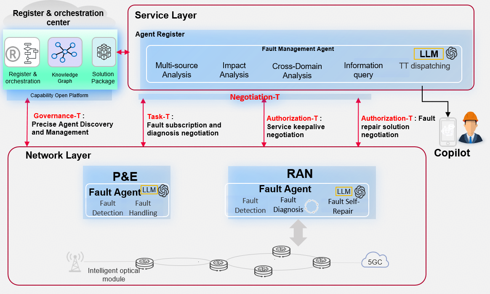

Case Study 1
Cross-Domain Fault Handling via A2P
Agent to Agent Protocol for Telecoms · P&E + Wireless Systems
Overview
Cross-domain fault collaboration between P&E and wireless systems, leveraging the Agent-to-Agent Protocol for Telecoms. Piloted & implemented at CMCC Fujian, serving 84.6 million subscribers. Also piloting with CSPs such as AIS.
Cross-domain faults are the most troublesome issues for operators — high cost, slow repair, and highly disruptive. Requires multiple domains to jointly locate and collaboratively handle.
Architecture

Key Achievements & Metrics
Interaction Efficiency
+50%
Interaction Accuracy
90%+
E2E Fault Handling
8.8h → 7.9h
Service Impact Duration
3.3h → 0.1h
Traffic Loss Mitigation
693 TB/yr
Workload Saved
11 Person-yr
Integration TTM
Months → Days
Subscribers Covered
84.6 Million